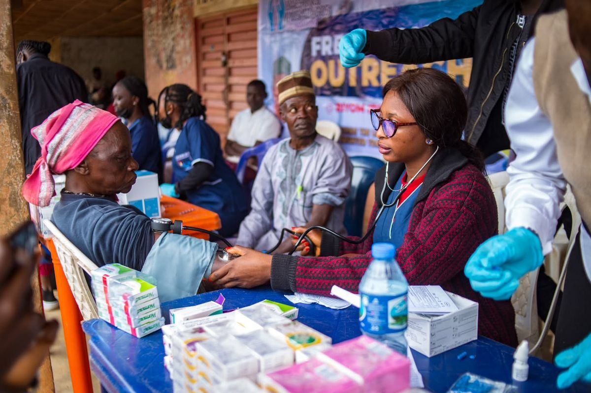

Work for Jesus, heal the sick 2026
Help Them Now —
Not When It's Too Late
Very often, we wait until people's cry for help fades into silence — until their struggle ends in tragedy — before we offer our hands, our hearts, our resources. But what use is money and kindness when it comes too late?
Meet Dr. Danso →

Supporting elderly lives across Africa with care, dignity, and timely medical intervention. Because flowers on a grave cannot replace love while they breathe.